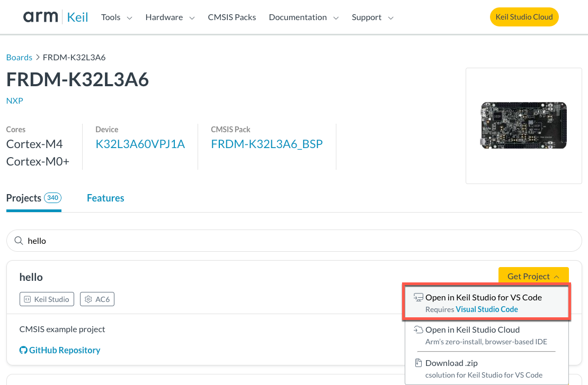
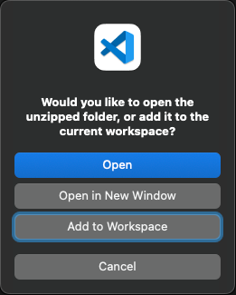
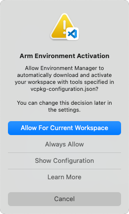

Setup
The Arm Keil Studio Pack (MDK v6) extension pack includes the CMSIS Solution extension and other extensions that you can use to work with CMSIS solution projects.
-
In Visual Studio Code, open the Extensions view and type
Keil Studio Packin the search bar. -
Click Install to start the installation. When the installation is finished, the CMSIS view icon appears in the activity bar.
You can create your first application or download an example project and then check that you can build, run, and debug the application.
Note
If you do not want to install all the extensions available in the pack, you can install the CMSIS Solution extension as standalone.
Search for CMSIS Solution in the Extensions view.
Find an example project
The CMSIS boards list contains many examples that you can use to verify that the extension works correctly.
The following procedure explains how to start from an example for the NXP FRDM-K32L3A6 development board. Adapt the steps to your development board.
-
In your browser, open the CMSIS boards list.
-
In the search bar, type
frdm-k32. Alternatively, you can search for a board using the Vendor and Core filters. -
In the list of suggested boards, click
FRDM-K32L3A6. The board page opens on the Projects tab. This tab shows the list of available example projects. -
In the search bar, type
hello_frdm. -
In the Get Project drop-down list, select Open in Keil Studio for VS Code to download the example to your computer and open it in Visual Studio Code. 
Visual Studio Code asks for a permission to open the URI.

-
Click Open.
-
Select a download location.
-
Select Open in New Window to open the example in a separate Visual Studio Code window. 
-
If you installed the Keil Studio Pack, confirm that the Arm Tools Environment Manager extension can automatically activate the workspace and download the tools specified in the
vcpkg-configuration.jsonfile included in your project. 